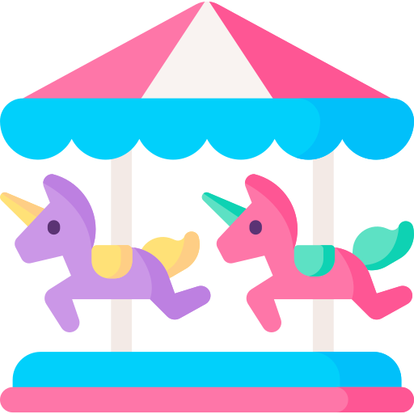
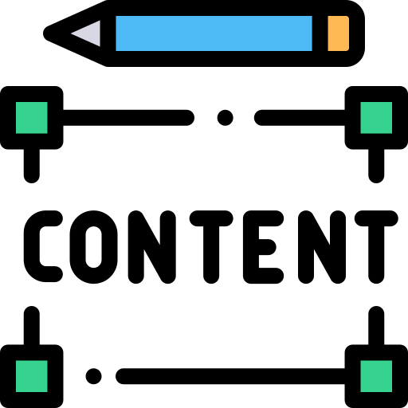

어른들을 위한 동화
왜 어른들은 동화를 읽게 되었을까?
동화를 통한 위로
팬데믹과 같이 시대가 어려울수록
동화의 힘을 빌려 위안을 받는 사람들이 많다.
어렵지 않은 내용
온 신경을 집중해서 읽지 않아도
그림을 통해 쉽게 읽을 수 있다는 장점이 있다.
마음을 울리는 메시지
동화책 속 메시지들이 성인들에게
통찰을 준다는 점에서도 주목을 받고 있다.


뉴스 영상 바로보기
About Be Children
비 칠드런을 소개합니다!

아기자기한 디자인
동화에서 모티브를 얻은
파스텔톤과 아기자기한 디자인.
동화 리스트
하나 하나 찾지 않아도 되는
어른을 위한 동화가 모인 리스트

간결한 내용
동화책처럼 간결하게,
그러나 풍부하게 전하는 정보.
사용 자료 출처
사용 아이콘 사이트: Flaticon
동화책 아이콘 : smashingstocks
포옹 아이콘 : Victoruler
뉴스 아이콘 : kerismaker
메시지 아이콘 : Icon Place
쉬움 / 회전목마 / 내용 아이콘 : Freepik
리스트 아이콘 : Arkinasi
사용 배경 출처 :
출처 Freepik
작가 vectorpouch 출처 Freepik
작가 upklyak 출처 Freepik
작가 upklyak 출처 Freepik